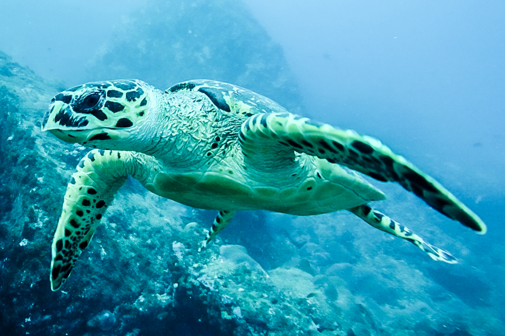
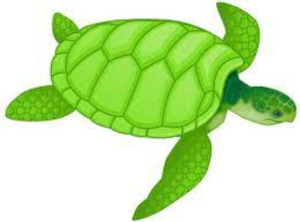

Há Somente Sete Espécies De Tartarugas Marinhas No Mundo

Cinco estão no litoral brasileiro e são:
tartaruga-cabeçuda
tartaruga-verde
tartaruga-oliva
tartaruga-de-couro
Clique abaixo para retornar a pagina principal
